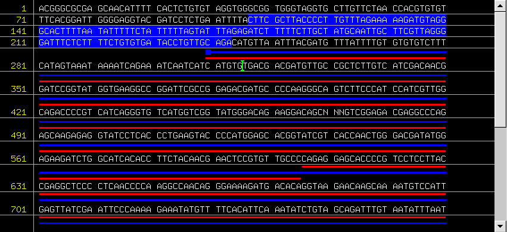
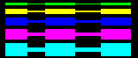

#include "gui/seq/view.hpp" in the "extra code" field below
Sequence View (SeqView) Control
Last Revision: 24 Sep 2002
Overview
The NCBI GUI SEQ library describes and implements a set of objects needed to display and navigate molecule sequences and features. The basic functionality allows to display a molecule sequence and features, use mouse or keyboard to select parts of the sequence, get feature information, change features shape, change various interface colors. The main advantage of using the SeqView is that you can have multiple sequence data sources and can easily and fast switch between them.
The SeqView architecture.
The Sequence View relies on two external components: OpenGL and FLTK. OpenGL is used for all drawing, FLTK is used to layout and display GUI elements.
Classes overview.The SeqView consists of a three classes:
| CSeqPanel | OpenGL panel inherited from Fl_Gl_Window. Actual drawing is done here. |
| CSeqView | The Sequence View itself. Contains CSeqPanel and Fl_Scrollbar. |
| CSeqDataSource | A Sequence View data source. Used by CSeqPanel to get sequence and features to draw. All mouse and keyboard events are also handled here. Inherit your data source implementation from this class. |
Setting up the Sequence View
These three steps are required to use SeqView in your code:
The easiest way to setup a Sequence View is to use FLUID - FLTK interface designer:
#include "gui/seq/view.hpp" in the "extra code" field below
Setting up SeqView manually
To setup Sequence View manually use the standard FLTK widgets constructor. Something like:
CSeqView* m_SeqView = new CSeqView(10, 40, 850, 390);
Sequence View Data Source
Creating a data source
The data source is required to provide Sequence View with the actual sequence data to display. To create a data source:
| TSeqPos GetSequenceLength() | to return the sequence length |
| void GetSequence(TSeqPos from, TSeqPos to, string& buffer) | to fill buffer with molecule sequence within a given region |
| void GetFeatures(TSeqPos from, TSeqPos to, vector |
to fill vector of features within a given region |
Displaying molecule features
Sequence View is capable of displaying four different kinds of feature shapes. These shapes are defined in the CVisibleFeature class.
enum EType {
eBox, // a rectangle
eRightArrow, // a right facing arrow
eLeftArrow, // a left facing arrow
eMulti // a feature with multiple features on it
};
Each feature has the following attributes:
| string m_Id | Unique ID to identify feature |
| TseqPos m_From | Feature start |
| TseqPos m_To | Feature finish |
| TColor m_Color | Feature color |
| EType m_Type | Shape to represent the feature. |
| TDimension m_Height | Height of the feature bar. Two extra margin pixels (on top and bottom) will be automatically added to this value. |
| vector< CVisibleFeature > m_SubIntervals | Define sub-intervals for multi features (eMulti type). For all other feature types this will be ignored. |
The following table demonstrates various kinds of shapes, height and colors to customize feature display.
| Type | Appearance (Heights from 1 to 5) |
| eBox | |
| eRightArrow |  |
| eLeftArrow |  |
| eMulti |  |
Using NCBI C++ Toolkit Object Manager to implement data source
The NCBI C++ Toolkit Object Manager is ideally suited for use in the Sequence View data sources.
Implementing GetSequenceLength with Object ManagerTSeqPos GetSequenceLength() CSeqVector seq_vect = bioseq_handle.GetSeqVector(EVectorCoding ::eCoding_Iupac, EVectorStrand::eStrand_Plus); return seq_vect.size();Implementing GetSequence with Object Manager
void GetSequence(TSeqPos from, TSeqPos to, string& buffer) seq_vect.GetSeqData (from, to, buffer);Implementing GetFeatures with Object Manager
void GetFeatures(TSeqPos from, TSeqPos to, vector& vec) for (CFeat_CI feat_it(bioseq_handle, from, to, CSeqFeatData::e_Genes); feat_it; ++feat_it) { const CSeq_feat& feat = *feat_it; CVisibleFeature vf; vf.m_Id = "Gene: " + feat.GetTitle(); vf.m_From = feat.GetLocation().GetTotalRange().GetFrom(); vf.m_To = feat.GetLocation().GetTotalRange().GetTo(); vf.m_Height = 3; vf.m_Color = FL_RED; vf.m_Type = CVisibleFeature::eBox; vec.push_back(vf); }
Features will be shown in the Sequence View in the exact order of features in "vec" vector. The best way to group features by type is to iterate through one kind of feature after another in the order you would like them to appear in the Sequence View.
Handling keyboard and mouse events.
The support for keyboard and mouse events is implemented in the Sequence View data source. One can override any of the following virtual functions and implement its own handlers for these events, which are:
KeyPressed, Cut, Copy, Paste, DoubleClick
enum ERedraw {
eRedraw, - Redraw the view after event
eNoRedraw - Do not redraw the view after event
}
If a method modifies the data it should return an "eRedraw" – a notice to Sequence View to redraw itself. eNoRedraw indicates that no changes to the data was made and therefore redraw is not necessary.
Keyboad events
The KeyPressed method will be called each time a key is pressed in the Sequence View.
ERedraw KeyPressed(TKey key, TKeyState key_state, TSeqPos cursor);
In this call "key" is FLTK definition for a key pressed and "key_state" contains keyboard states for Shift, Control, Alt and some other keys. Please refer to FL/Enumerations.H in FLTK for complete list of keys and keystate definitions. The "cursor" contains current position of a Sequence Cursor in the view.
One of possible uses of this method is to implement an "inline" editing of a molecule sequence.
Cut/Copy/Paste events
Separately from the keyboard events handler, methods for clipboard shortcuts are implemented. These methods will be called each time a Cut, Copy or Paste key combination is pressed in the Sequence View. These key combinations are platform-dependent and handled by FLTK engine. (For example: Ctrl-C, for Copy on Windows and Option-C on Mac).
ERedraw Cut (TSeqPos from, TSeqPos to, TSeqPos cursor); ERedraw Copy (TSeqPos from, TSeqPos to, TSeqPos cursor); ERedraw Paste(TSeqPos from, TSeqPos to, TSeqPos cursor);
In these calls "from" and "to" define the position of the sequence selection in the View and "cursor" is a current cursor position. Don’t forget to return eRedraw if the sequence data is modified by those methods.
Double-click event
DoubleClick method is called each time when double-click event occurs in the valid area of the Sequence View.
ERedraw DoubleClick(TSeqPos at, const string& feature_id);
In this call "at" is a sequence position of the double click and "feature_id" contains the ID of a feature if feature was clicked on.
Sequence View Methods
The following ten methods are available in Sequence View:
SetDataSource, ShowFeatures, HideFeatures, SetSelection, GetSelectionStart, GetSelectionFinish, SetCursor, GetCursor, SetColor and GetColor.
Setting up a data source
Use SetDataSource method to register a new DataSource with Sequence View.
void SetDataSource(CSeqDataSource* ds)
In this call “ds” is a user data source inherited from CSeqDataSource.
Feature display
To enable or disable display of a sequence features use the following pair of Sequence View methods.
void ShowFeatures() – to enable features display. void HideFeatures() – to disable features display.
By default, features are not shown.
Sequence Selection
Region of the sequence can be selected programmatically using:
void SetSelection(TSeqPos start, TSeqPos finish)
To obtain the current sequence selection region, use the following pair of methods:
TSeqPos GetSelectionStart() - get start of selected region TSeqPos GetSelectionFinish() - get finish of selected region
Sequence Cursor
Position of the cursor in the sequence can be set or retrieved using:
void SetCursor(TSeqPos pos) TSeqPos GetCursor()
Sequence View Colors
Sequence view allows customizing the color of the following display elements:
enum EDisplayElement {
eBackground, // the Sequence View background color. The default is FL_BLACK.
eGrid, // the color of grid lines. The default is FL_GRAY.
eNumbers, // the color of sequence numbers. The default is FL_YELLOW.
eSequence, // the color of sequence letters. The default is FL_WHITE.
eSelection, // the color of sequence selection. The default is FL_BLUE.
eCursor // the color of sequence cursor. The default is FL_GREEN.
};
Please refer to FLTK documentation for a complete list of fixed color definitions or use fl_rgb_color() call to create your own color:
Fl_Color c = fl_rgb_color(85, 170, 255);
The following pair of methods allows setting and retrieving the color of a particular display element of a Sequence View.
void SetColor(EDisplayElement elem, TColor color) TColor GetColor(EDisplayElement elem)
Sequence View Demo Application
Demo View is small application to demonstrate the basics of the Sequence View.
demo_view.cpp - code generated by FLUID (Fast Light User Interface Designer). Please use FLUID to open demo_view.fl template file.
CSeqViewTestDS - is a sample data source that uses NCBI C++ Toolkit Object Manager to get real molecules from DB.
The demo data source also implements a sample Cut/Copy/Paste operations and double-click handling.